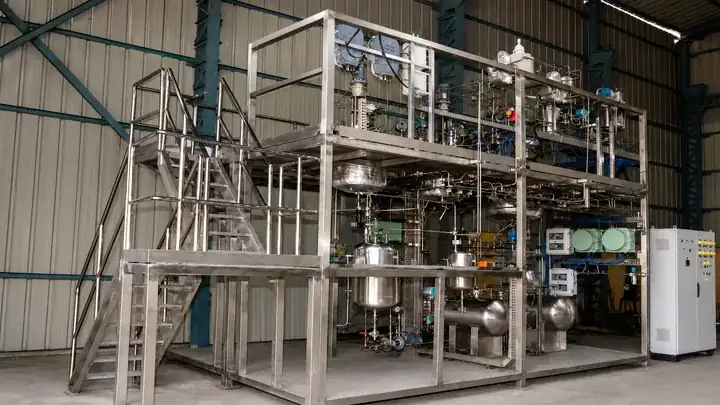

01
01 · Basic Engineering & Feasibility
Establish the process and operating basis, assess interfaces and risks, and define a preliminary scope, preliminary P&ID and Class 4 budgetary estimate.
DeliverablesDifferent teams need different levels of support. Basic Engineering & Feasibility, Detailed Engineering, and Integrated Design & Build can each be commissioned separately. There is no obligation to proceed from one phase to the next.

01 / Understanding the requirement
A clear process basis, defined responsibilities, technical boundaries and acceptance criteria help prevent design gaps from becoming fabrication or startup surprises. The right starting point depends on the maturity of the concept, the quality of available inputs and the buyer’s next milestone.
See the engineering approach
02 / Capabilities & context
We define the relevant scope with the project team rather than assuming a standard package fits every application.
Establish the process and operating basis, assess interfaces and risks, and define a preliminary scope, preliminary P&ID and Class 4 budgetary estimate.
DeliverablesDevelop the agreed basis into process and mechanical design, instrumentation selection, electrical design and control narrative, priced to a Class 2 estimate.
DeliverablesEngineer, procure, fabricate, supply instrumentation and electrical works, program, integrate and test the contracted system, then support site handover.
DeliverablesWhat it does
Turns a lab result, process idea or upgrade need into a defined engineering basis and a Class 4 budgetary estimate, before you commit to detailed design or hardware.
Best when
The process works at lab scale or the requirement is still forming, and you need a budget basis or a go/no-go for the next investment decision.
Decision it enables
Whether, and how, to proceed to Detailed Engineering.
Typical deliverables
What it does
Develops the agreed basis into a coordinated, procurement-ready engineering package, priced to a Class 2 estimate.
Best when
The process basis is settled and you need a buildable package: for your own fabrication, for a tender, or for a build phase with us.
Outcome
A package ready to tender or build, with us or with another partner.
Typical deliverables
Process & mechanical design
Instrumentation selection
Electrical design
Control narrative & architecture
Procurement, safety & cost
What it does
One accountable team engineers, procures, fabricates, supplies instrumentation and electrical works, programs, integrates and tests the contracted system, followed by defined site support and handover.
Best when
You want one partner responsible from drawings to a working system.
Outcome
A system accepted against the criteria agreed at the start.
Typical deliverables
Procurement & fabrication
Instrumentation
Electrical
Automation & data
Testing, commissioning & handover
The exact deliverables are agreed for each engagement. Cost estimates are classified to AACE International guidelines: Class 4 at feasibility, Class 2 at detailed engineering.
Each phase is a separate paid scope. You can stop, change direction or engage another partner after any phase.
03 / Delivery logic
04 / Safety by design
Pilot and process systems often combine unfamiliar chemistry, new operating windows and a scope that keeps changing. We manage that risk across process, mechanical, electrical and controls disciplines from the first phase.
Identify process hazards and credible deviations early, through the risk-review method agreed for the project.
Support and take part in HAZID and HAZOP reviews, or other formal reviews, where they suit the scope and stage.
Turn each agreed safeguard into equipment, relief and venting, isolation, alarm, permissive and interlock requirements.
Define safe start-up, shutdown, purge and preparation, and behavior on loss of utilities, as the process requires.
Check the implemented safeguards at design review, factory acceptance (FAT) and site acceptance (SAT).
HAZOP support, alarm and interlock definitions, FAT and SAT plans and commissioning procedures sit in the phase deliverables above, where the project scope calls for them.
05 / Start with what you know
The first discussion is most useful when the team can share its existing basis, open questions, and the next decision the project must enable.
Prepare a technical enquiryLet's grow together
Toronto: +1 (647) 874-3958
Pune: +91 70280 15958
Toronto, Ontario, Canada
Pune, Maharashtra, India